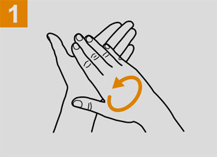
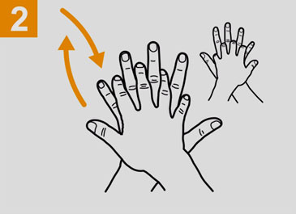
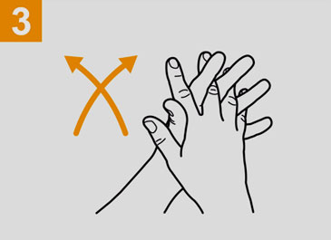
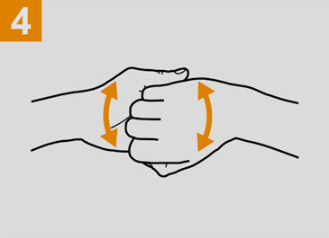
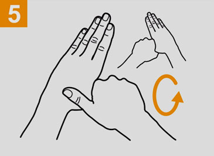
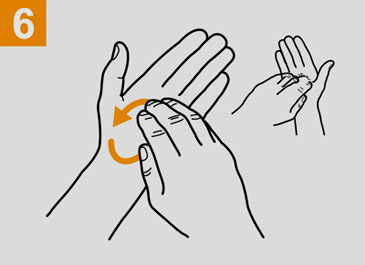
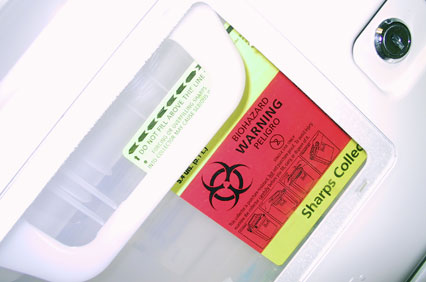
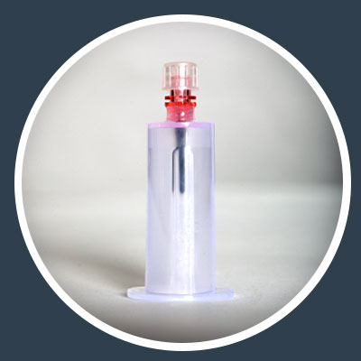
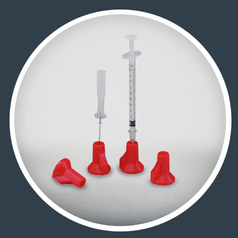

Preventing Blood Borne Pathogens Exposure
Blood borne pathogens are microorganisms found in human blood and other human bodily fluids. Without proper knowledge of procedures, life threatening infections can transfer from person to person.
The most common infections occurring from blood borne pathogen exposure are Hepatitis B, Hepatitis C, and Human Immunodeficiency Virus (HIV).
Why is this important for you to know? Anyone working with patients, with blood or body fluids, or in patient surroundings may be at risk, including you, even if you do not perform direct patient care!
YOUR RISK
Nurse: 42.1%
Lab Workers: 33.3%
Physicians: 10.5
Housekeeping/Maintenance: 3.5%
Surgical Technician: 3.5%
Other: 7%
(Distribution of occupational transmission of HIV among health care workers by occupation, 1981-2002. Among the documented cases of HIV following occupational exposure, 84% resulted from percutaneous exposure (Source: CDC [2003])
Even if your risk seems low, you can be exposed and suffer the long-term consequences of a blood borne pathogen infection. The physical locations where exposure occurs most often are patient rooms and operating rooms. The job category incurring the highest rate of exposure is nursing. However, all staff should be alert to the risk and take the necessary precautions.
THE MOST NOTABLE BLOOD BORNE PATHOGENS
Hepatitis B
Hepatitis B is an infection of the liver caused by the hepatitis B virus (HBV). It can lead to serious problems such as liver cancer or chronic liver disease.
How is it spread?
HBV is spread by direct contact with infected blood and body fluids. HBV can survive in dried blood on surfaces for up to 7 days.
What are its symptoms?
Many people infected with HBV have no symptoms. Others may have symptoms that include fatigue, poor appetite, fever, vomiting, dark urine or jaundice (a yellowing of the skin and whites of the eyes).
Is there a vaccine?
Yes. The Hepatitis B vaccine is a safe, effective series of three shots and is recommended for all healthcare workers who have contact with blood and bodily fluids. The vaccine is available free of charge through CHOP’s Occupational Health Department (OHD), x 4-1928.
Hepatitis C
Hepatitis C is a liver disease caused by infection with the hepatitis C virus (HCV). It can lead to serious problems such as liver disease and liver failure.
How is it spread?
HCV is spread by direct contact with infected blood and bodily fluids. This occurs most commonly through needle sticks. The risk of getting HCV is no greater in healthcare workers than in the general population.
What are its symptoms?
The most common symptom of HCV infection is extreme fatigue (tiredness), although many people have no symptoms.
Is there a vaccine?
There is no vaccine to prevent HCV infection. Prevention procedures and disease treatment are the only options.
Human Immunodeficiency Virus (HIV)
HIV is a virus that causes Acquired Immunodeficiency Syndrome (AIDS). The virus attacks the body’s immune system, eventually leaving it unable to fight infection.
How is it spread?
HIV is spread by direct contact with infected blood and body fluids. However, HIV is much less contagious than Hepatitis B.
What are its symptoms?
When first infected with HIV, there may be symptoms of fever, headache, fatigue, muscle aches, rash or swollen glands.
Is there a vaccine?
There is no vaccine to prevent HIV infection. However, potent drug therapy has been successful in preventing progression or prolonging the time it takes to develop AIDS.
DID YOUKNOW?
The human body fluids that contain blood borne pathogens are blood and other potentially infectious fluids (OPIF) which include:
- any human body fluid containing visible blood
- semen
- vaginal secretions
- cerebral spinal fluid
- fluids surrounding internal organs (fluid in the sac of the joints, or a fetus (amniotic fluid)
The human body fluids that do not carry BBP unless mixed with blood are: sweat, tears, urine, vomit, stool, saliva, and sputum.
Exposure and Transmission Methods
Common Exposure Methods
- Needle stick injuries
- Cuts from scalpels, sutures, sharp objects contaminated with blood
- Splashes to the eyes, nose, or mouth
- Contact with broken, chapped, or cut skin
Common Transmission Methods
- Mucous membranes (eyes, nose , mouth)
- Bloodstream entry through scraped, cut, abraded, or punctured skin
- Sexual transmission
- Transmission to a child before or during birth from infected mother
SAFETY & PREVENTION
Use Safety Behaviors
CHOP has standards and controls in place to protect employees from blood borne pathogens exposure. In addition, employees are always encouraged to use safety behaviors every day.
In this instance, safety behaviors include:
- Practicing work with a questioning attitude
- Paying attention to detail with equipment, processes, or other environmental factors
- Communicating questions or concerns relating to devices or general blood borne pathogen safety
Use Personal Protective Equipment (PPE)
Select PPE based on your expected exposure. Anticipate the procedures and tasks you will be performing as well as the standard precautions specified in any patient area. PPE at CHOP includes but is not limited to:
Gowns and gloves. They protect your skin from exposure, and fluid resistant gowns prevent soiling of your clothes when your work involves splashes or sprays of blood and bodily fluids. Never reuse disposable gloves.
Eye protection. Wear eye protection and a mask to protect the mucous membranes of your eyes, nose, and mouth when work may involve splashes or a spray of blood or bodily fluids.
Practice Correct Hand Hygiene
Employees must perform hand hygiene before and after contact with patients and patient surroundings. If gloves are worn, perform hand hygiene immediately after removal of gloves and after exposure to blood or bodily fluids. If hands are not visibly soiled, an approved alcohol hand rub may be used instead of soap and water. If in doubt, wash with soap and water as an added precaution.
Follow the six steps below for proper hand hygiene.
 Rub hands palm to palm;
 Right palm over left dorsum and vice versa;
 Palm to palm with fingers interlaced;
 Backs of fingers to opposing palms with fingers interlocked;
 Rotational rubbing of left thumb clasped in right palm and vice versa;
 Rotational rubbing backwards and forwards with clasped fingers of right hand in left palm and vice versa.
Use Engineering Controls
Engineering controls are tools, equipment, and products that are used at CHOP to reduce or eliminate blood borne pathogen exposure.
Needleless systems and safety devices

Use the following devices and objects to reduce or eliminate exposure:
- Insyte safety IV catheters
- Safety Glide needles
- Blood transfer devices
- Safety lancets
- Safety scalpels (in most areas)
- PointLok devices to secure non-safety needles
Sharps Containers
Always dispose of sharp items in rigid sharps containers. Never leave a used needle on a table, tray, or any other surface where you or a coworker could be stuck.
Biosafety Cabinets
These cabinets protect users from droplets and aerosols in contaminated specimens. See CHOP’s Biosafety Manual on the intranet for more information.
Use Work Practice Controls
Follow proper procedures for cleaning and disinfection using hospital approved disinfectant. Remember to:
- Place soiled linen in a leak-proof bag in a covered hamper.
- Place infectious waste in red bag trash including all items saturated with blood and bodily fluids including bloody diapers, certain waste coming from isolation rooms, and some lab waste.
- Clean-up spills of blood and bodily fluids as soon as possible using a hospital approved disinfectant. Major blood spills require a 1:10 dilution of sodium hypochlorite solution for effective disinfection.
Sharps Prevention Methods
CHOP evaluates and implements devices and work practices that decrease the risk of blood borne pathogen exposure.
Safety devices are designed to minimize risk, but knowing how to properly use a safety device is an essential part of preventing needle stick injuries. Below are some devices commonly used in patient care areas. Please review how to use them.

BD™ Blood Collection Push Button Device
Always use the black push button on the device to retract the needle BEFORE removing from a patient.

Vacutainer Blood Transfer Device
Never place a finger inside the barrel while handling. There is an inner needle that may not be obvious.

Point-LOK
The Point-LOK is a stand-alone needle protection device that is designed to lock onto a contaminated needle. Dispose of the needle and device into a sharps disposal container. For clinical staff, ask your manager where the Point-LOK devices are kept on your unit.
EXPOSURE RESPONSE
Use Safety Behaviors
Take action promptly using the following steps:
CLEAN
Cleanse the puncture or cut wound with soap and water. Flush the involved tissue or mucous membrane with clean water or physiological saline.
REPORT
Report any exposure to your manager or supervisor, or your Charge Nurse in addition to the office of Occupational Health. In the event of exposure, you and your supervisor must fill out an Employee Occupational Accident or Illness Report. Report all needle sticks occurring after hours to the Nursing Supervisor. This includes nights, weekends, evenings and holidays. This applies to all employees at all locations.
NOTE:
Starting in November 2015, you will report all injuries using the new safety reporting system. Watch for more information on this.
PROMPT EVALUATION
Ensure that you:
- Promptly report the injury to your supervisor or the nursing supervisor
- Contact the Occupational Health Department (OHD), 7:30 A.M. to 4:00 P.M., Monday – Friday, or the Nursing Supervisor when after hours. OHD will determine the source risk of HIV. When needed, the ideal time to start post-exposure medication is within 2 hours of the BBP exposure.
Blood Borne Pathogen Transmission Testing
- Testing for HBV, HCV, and HIV is offered to employees with a documented exposure.
- If exposure is high risk for HBV or HIV transmission, medication for prevention of transmission is started promptly.
- Follow up care is determined.
- Employees are contacted with exposure lab results as soon as they are available.
- Employees receive a written post-exposure notification detailing Hepatitis B status and any follow up recommendations.
Source Patient Testing for Ordering Physicians
Informed Verbal Consent
Informed verbal Consent must be obtained in order to begin Source Patient Testing. No source patient HIV-related test may be performed without the following:
- Providing an explanation of the test to the source patient (any person whose body fluids have been the source of a significant exposure)
- Obtaining the verbal consent of the patient or personal representative
- Documenting in the medical record that consent was obtained or declined
Documenting Verbal Consent
If you are the ordering clinician, you will need to document the source patient consent. When ordering labs and documenting in Epic:
- Go to Order Sets. Type the following: EMP
- Uncheck any orders that you do not need.
- Remember to check the “informed consent” check box.
Additional Help and Information
For any questions contact
For additional information, visit: